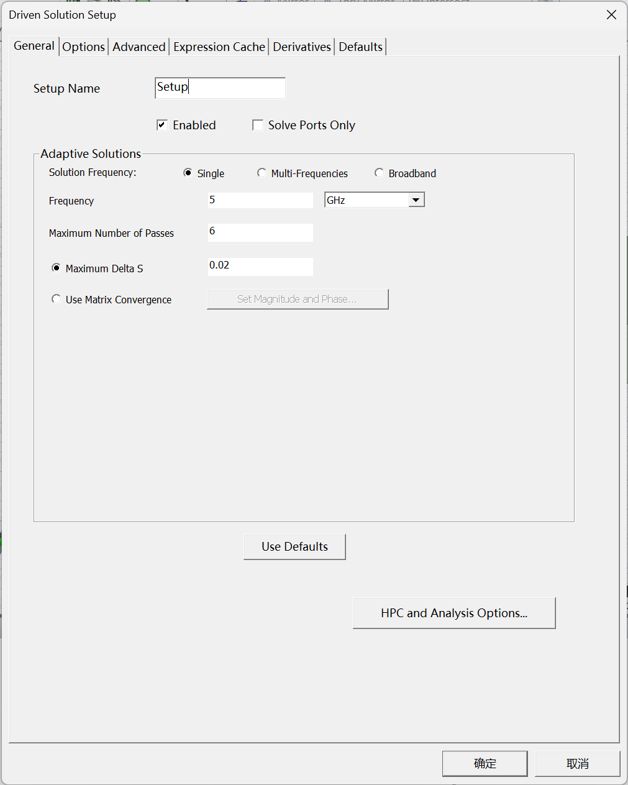
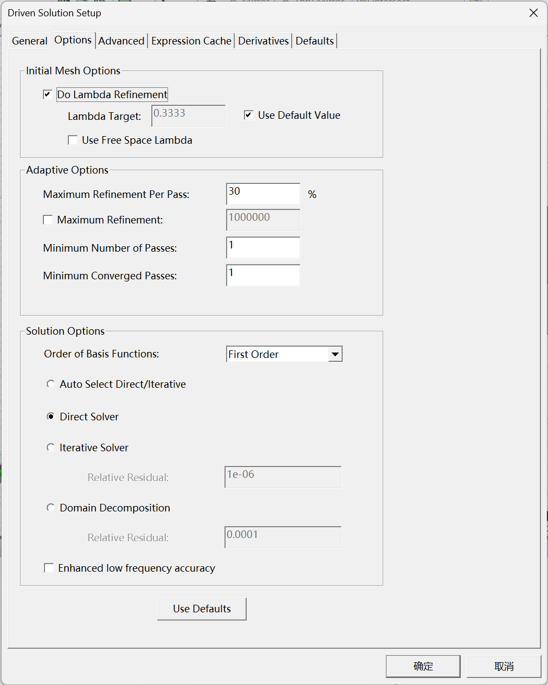
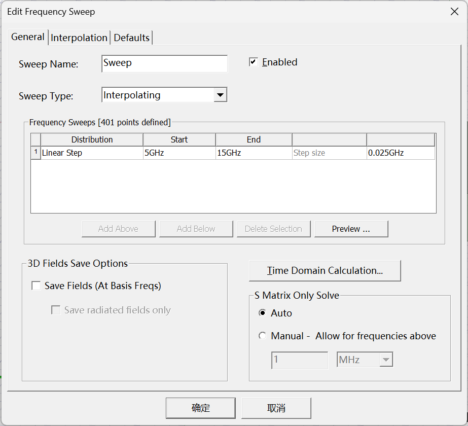

HFSS功能概述
截止到目前，这篇博客的主要内容来自《HFSS 射频仿真设计 实例大全》。
功能概述
- 基础知识
- 的边界条件
- 中的激励源
- 仿真常用设置
基础知识
-
数值求解方法： 利用有限元的方法（）的数值求解方式进行求解。
-
自适应求解过程：

-
求解步骤：

-
三种求解方式：驱动模式、终端模式、本征模式
-
驱动模式：能够应对一般 的求解，尤其对包含微带、波导等传输线的模型适用。
-
终端模式：一般用于处理包含多种传输线、如求解处理信号完整性问题。
-
本征模式：一般用于用于求解给定结构模型的谐振频率。
驱动模式和终端驱动模式很相似，两者的区别在于给出的结果类型。用驱动模型求解的S参数是用入射波和反射波的功率计算得到的，而用终端驱动模式求解的S参数是根据终端的电压和电流得到的。例如，在仿真共面波导或者平行微带传输线时，用驱动模型求解得到的是沿着结构传输的奇偶模，而终端驱动模式求解得到的是共模和差模。
-
的边界条件
的边界条件处与两种目的：
- 建立的模型为开放或者封闭的电磁模型，如天线需要建立开放的模型，而为波导建立封闭的模型 ；
- 简化电磁仿真模型，提高仿真速度。
提供的边界条件
- 理想电（）条件： 的默认边界条件，可以应用在模型内部，电场方向在指定平面上与该平面垂直。 条件可以指定给 的平面物体，代表该传输线是理想的无耗物体。
- 辐射边界条件：辐射边界条件在 里通常用来设置开放的模型，即允许电磁波传输到无穷远处， 在边界条件处吸收电磁波。应注意的是，如果仿真天线，辐射边界条件必须放在辐射表面的四分之一波长之外。
- 理想匹配层（）边界条件：理想匹配层边界条件在 同样用来创建一个开放模型，仿真天线时同样可以选用它。
- 有限电导率边界条件：当创建的 平面模型需要模拟导体时可以使用有限导电率边界条件，在模拟薄带线时很有用。但有限电导率边界条件仅仅在模拟薄导带的厚度比趋肤深度厚的情况下才有效。
- 分层阻抗边界条件：分层阻抗边界条件用来指定具有不同层材料的导体为一层等效阻抗，它同时可以考虑导体表面的平整度。
- 阻抗边界条件：阻抗边界条件用于仿真具有方阻特性表面薄材料，如薄膜电阻等。
- 集成 边界条件：集成 边界条件主要模拟理想电阻、电感或者电容等集总元器件，可以模拟单个元件或者 的并联电路。集成 边界条件可以看成更近的电阻边界条件，可以直接指定电阻、电感、电容的值。无源的并联元器件可以直接指定边界条件的值，而串联的元器件则需在两个串联的 平面上指定两个独立 边界条件。
- 对称边界条件：使用对称边界条件可以减小整个电路的仿真尺寸和仿真时间。 里有两种对称边界条件：电对称 和 磁对称。值得注意的是，使用终端驱动模式时不能使用该边界条件。在 里，对称边界条件代表理想电平面或者理想磁平面对称。使用对称边界条件可以只建立部分仿真电路，降低了设计的复杂度，从而缩短了仿真时间。当使用对称边界条件时，电场被迫平行于或者垂直于对称平面。当电对称平面时，电场垂直于该平面；当磁对称平面时，电场平行于该平面。
- 主从边界条件：当仿真模型包含有大量重复或者周期性的阵列结构时，主从边界条件在这种情况下将十分有用。通常主从边界条件用在无限天线阵列或者频率选择表面上。
- 理想磁边界条件：理想磁边界条件可以用来创建一个自然边界或者模拟一个理想磁导体，该边界条件可以应用在物体内部或者模型外边界。如果应用在内部， 将迫使在该平面两边的磁场切向分量相等；如果应用在模型边界，磁边界条件等效于一个理想磁导体，磁场的切向分量为零。
- 从边界条件：通常在大的重复阵列结构中和主边界条件配合使用。
中的激励源
中有七中激励源：、 、 、 、 、 和 。
其中仅有 、 、 、提供 参数求解。其中 和 还提供完整的 参数的求解。 还可以提供波阻抗、 常数、传播常数等。
当仿真环形器等铁氧体材料元器件时，Magnetic Bias Source将与Wave Port或者Lumped Port联合使用。仿真大的平面结构或者周期结构的模型，如无限大天线阵列、频率选择表面或者光子隙结构，Floquet Ports有很大的用处。Current Sources和Voltage Sources 能够提供理想的电流源和电压源，但是这两种激励模式只提供场信息，所以在一些RF设计场合使用有限制。
以下对常用的Wave Port和Lumped Port进行说明：
Wave Port在HFSS里是最常用的激励方式，广泛应用在微带、带状线、同轴或波导传输线中，它必须位于求解模型的外边界面上。Wave Port 代表能量进入的区域。HFSS 在求解过程中计算γ常数，所以结果可以去嵌入进或者去嵌入出端口，S参数根据去嵌入化的长度自动计算得到。HFSS假想Wave Port连接一个半无限长的波导，该半无限长的波导与端口具有同样性质。HFSS首先计算Wave Port的二维解，然后把该解作为三维模型的源。同时，由于Wave Port是能量进入模型的区域，所以Wave Port尺寸的设置至关重要。
Lumped Port 是 HFSS 中另外一个常用的端口类型。类似于面电流源，可以激励常见的各种传输线。Lumped Port 应用在激励电压隙和其他 Wave Port 不方便的场合，它仅仅能应用在模型内部。Lumped Port仿真结果的信息没有Wave Port多，仿真结果包含S、Y和Z参数，没有γ参数或者波阻抗的信息，所以Lumped Port不能去嵌入化，但可以归一化。不像Wave Port，Lumped Port 能够支持单一模式的仿真。Lumped Port 只能定义在二维的平面上，且该二维平面要和两个导体的边缘相连。如图1.13所示，Lumped Port施加在连接微带线和地平面的矩形的上下中点上。当创建Lumped Port时，需要在端口上画一根积分线，且积分线必须在连接两个导体边缘线的中点上。同时需要指定该端口的阻抗，作为生成的S参数的参考阻抗。端口阻抗的值也决定了源的电压或者电流的大小。值得注意的是，当阻抗是个复数时，无源器件的S参数值不一定小于等于1。
从表中可以看出，Wave Port和Lumped Port的几个重要区别为：① 位置不同，一个在外部，而一个在内部；② Wave Port 特别适合规格传输线端口，而 Lumped Port 对于BGA、bond-wire等不规则的结构很适合。
仿真常用设置
求解频率和 的设置
-
设置的求解频率（）决定了最大的初始有限元四面体的尺寸，是 对模型精确求解的频率，也是自使用求解的频率。求解频率设置的值必须是元器件的工作频率。如果仿真的是一个扫描频率，则求解频率的值为工作频率、扫描频率的中心值或者最高工作频率的 之间。选用何种值取决于扫描频率的类型。通常情况下，天线的仿真中设置该值为工作频率，滤波器设置为通带的中心频率。
-
的值是 判断仿真是否收敛的标准，是仿真结果收敛性呈现给使用者的直接体现。 是通过连续两次仿真的S参数的值计算得到的。一旦 参数的幅度值和相位值的改变小于使用者预设的 ，则仿真即终止。如果一直没有达到预设的 ，则仿真的次数达到设置的最大的仿真次数时也终止。

最大精炼和最大仿真次数设置
最大精炼的设置是指每次自适应仿真四面体元素增加的最大比例；最大仿真次数是指为了达到收敛的目的， 仿真最多的重复次数。如下图所示是最大精炼和最大仿真次数的设置界面。

自适应仿真应用 、最大精炼和最大仿真次数控制仿真的程度。 和最大仿真次数决定了仿真什么时候停止。如果在达到最大仿真次数之前满足了 的要求，则仿真也将停止；同时，如果仿真达到最大仿真次数，而仿真结果还没有收敛，则仿真同样也停止。
频率扫描类型设置
频率扫描类型在下图中设置。HFSS提供了3种不同的频率扫描类型：离散扫描、快速扫描和插值扫描。选用何种扫描类型取决于使用者的需求。当需要知道一些特殊频率点场信息时，离散扫描比其他两种类型的速度要快；快速扫描通常使用在需要得到一段频率所有解的情况下；插值扫描通常用来解决从DC到高频的情况。

小结
虽然大部分内容都还是在照搬书上的，但这确实时无奈之举，但是等反复实操过后，这些基础的操作是应该逐渐掌握的，写这篇博客也是希望能给自己做一个操作手册。
这篇博客远远没有结束，每一个新的收获都会添加在这篇博客内。